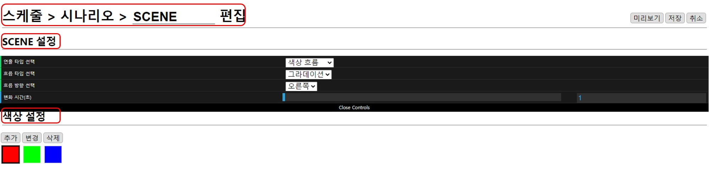
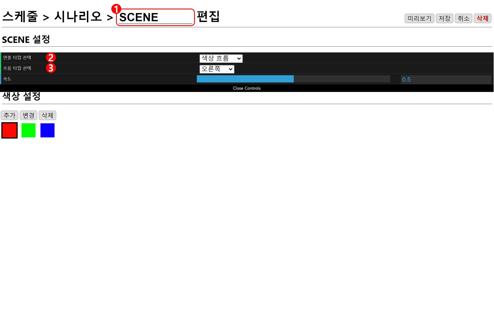
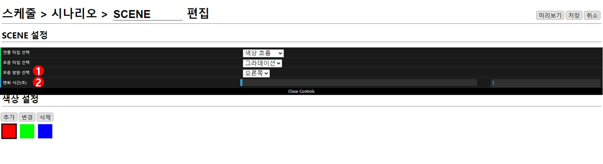
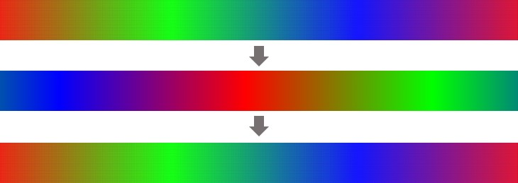
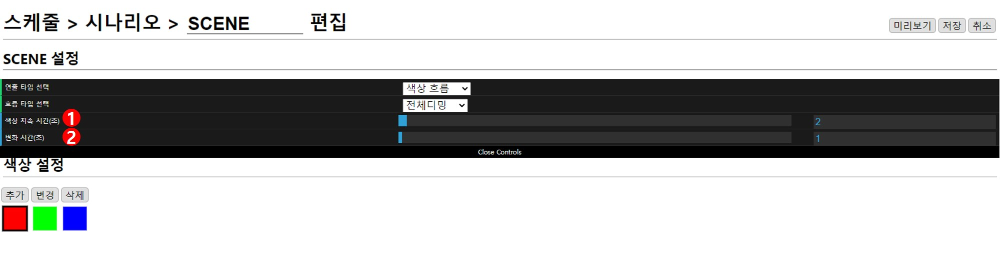
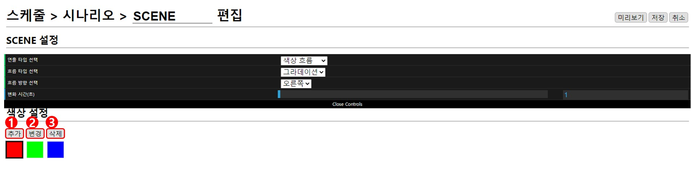
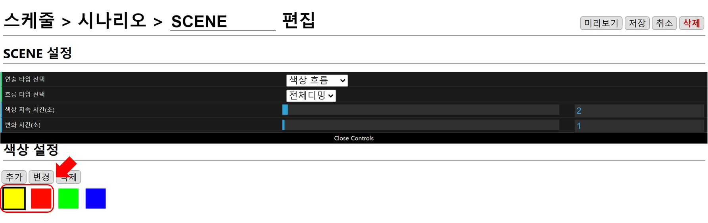

색상 흐름
편집창은 현재 위치, SCENE 설정, 색상 설정으로 구성되어 있습니다.

SCENE 설정

1. 연출 이름
이름은 랜덤으로 설정되기 때문에(편집 화면에서 수정 가능) 예시 그림의 이름과 다를 수 있습니다.
2. 연출 타입 선택
색상 연출을 위해 색상 흐름으로 선택합니다.
3. 흐름 타입 선택
색상이 흐르는 타입은 그라데이션, 전체디밍, 단색흐름중 선택할 수 있습니다.
그라데이션, 단색흐름

1. 흐름 방향
흐름 타입에서 방향이 있는 타입을 선택하면 나타납니다. 색상이 흐르는 방향을 오른쪽, 왼쪽, 위, 아래 중 선택할 수 있습니다.
2. 변화 시간(초)
- 그라데이션 : 색상이 시작 좌표에서 끝나는 좌표까지 이동하는데 걸리는 시간

- 단색 흐름 : 색상이 이동해 다음 색상으로 완전히 변하는데 걸리는 시간
전체디밍

1. 색상 지속 시간(초)
흐름 타입에서 전체 디밍을 선택하면 나타납니다. 색상 설정에 추가되어 있는 색상에 도달하면 설정된 시간만큼 유지됩니다. 0.1초 단위로 조절 가능하고 최소 0초, 최대 100초로 설정할 수 있습니다.
2. 변화 시간(초)
색상이 순서대로 변화할 때 현재 색상에서 다음 색상으로 변화하는 데까지 걸리는 시간을 설정할 수 있습니다. 0.1초 단위로 조절 가능하고 최소 0.1초, 최대 100초로 설정할 수 있습니다.
색상 설정

1. 추가
새로운 색상은 선택된 색상 앞으로 추가되므로 추가하고 싶은 곳의 바로 뒤 색상을 선택하고 추가버튼을 누릅니다.
- 예시: 빨강 선택 → 추가 → 노랑 선택

2. 변경
변경하고 싶은 색상을 선택한 뒤 변경버튼을 누르고 원하는 색상으로 변경합니다.
3. 삭제
선택된 색상이 삭제됩니다.